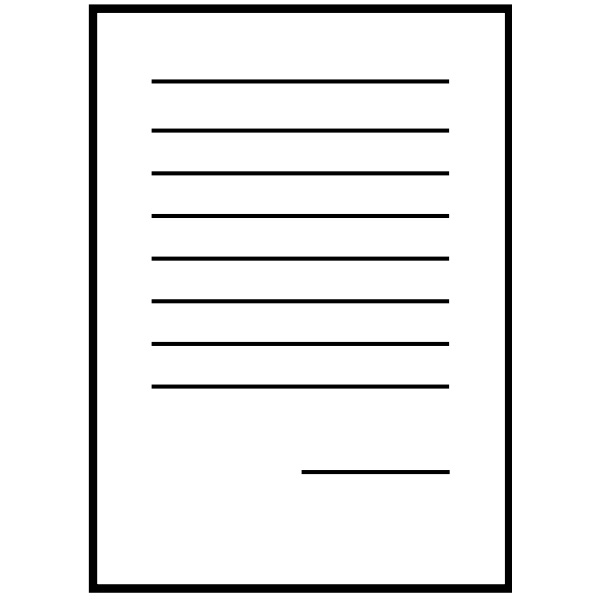
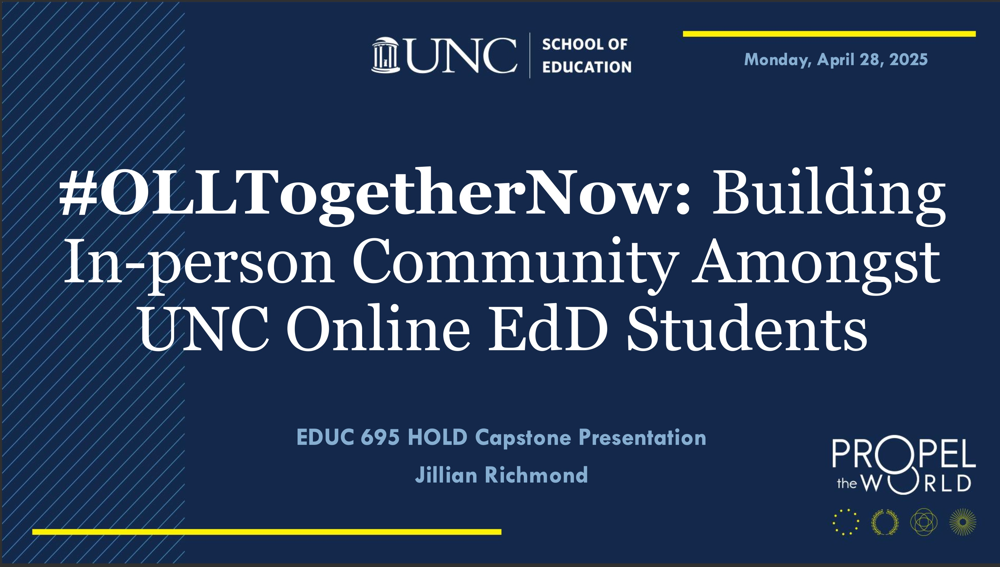
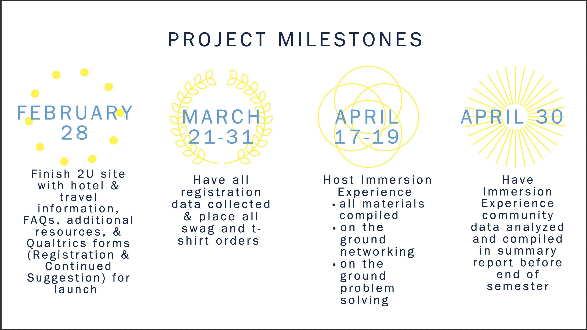
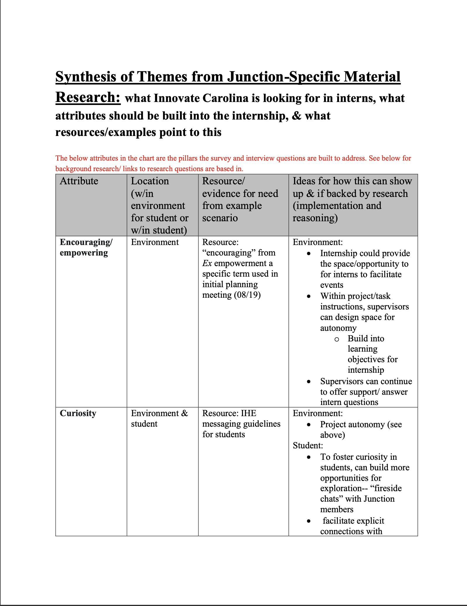
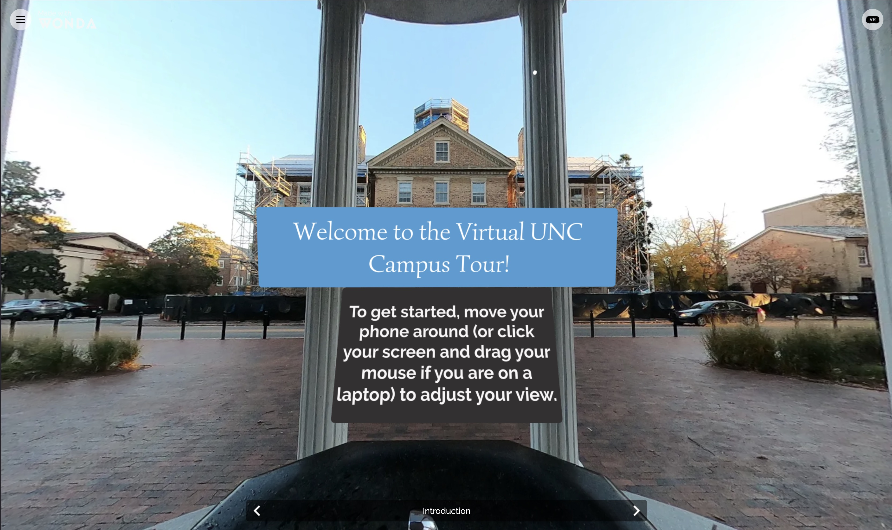
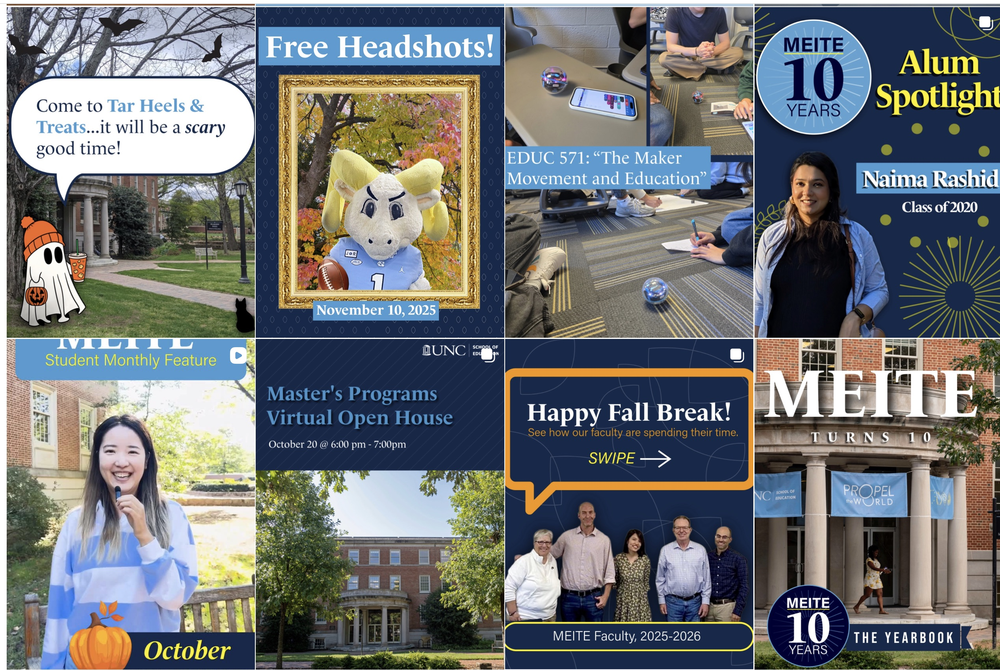

I'm happy you're here!
Check out my portfolio below.

#OLLTogetherNow: Building In-person Community Amongst UNC Online EdD Students
An individual presentation developed for my undergraduate capstone about my collaborative role in the theory-informed and data-driven process of developing the first Immersion Experience for the UNC School of Education's Organizational Learning and Leadership (OLL) EdD program. Includes project background, project focus and description, project impact, and a personal reflection.

OLL Project Deliverables
An individually developed sample of project deliverables for my undergraduate capstone— specific and actionable goals aligned to an outlined timeline along with project milestones.

Innovate Carolina Thematic Analysis
An independently developed pre-intervention analysis of pertinent themes relevant to the Innovate Carolina Innovation Hubs and Engagement (IHE) team's student internship program. Includes a literature review of student internships, analysis of Innovate Carolina's documentation, and a table outlining the organization's values and how they align with potential changes to the internship structure. Developed to present to the IHE team to inform further organizational development.

WebVR Scavenger Hunt
An individually-created interactive Virtual Reality tour of UNC Chapel Hill's campus built for OLL EdD students with difficulties navigating campus to experience a sense of place at UNC.

Social Media/Marketing
Social media posts and videos individually produced for the Master's of Arts of Educational Innovation, Technology, and Entrepreneurship program. Examples of my work include all posts dating back to August 15, 2025 through the present day.

About Me
I am a passionate systems improvement advocate interested in collaborating with and being part of communities that work toward sustainable, ethical, and meaningful change. I am a double Tar Heel, earning a Bachelor's degree in Human and Organizational Leadership Development from the UNC School of Education in May 2025, and earning my Master's in Arts in Educational Innovation, Technology, and Entrepreneurship in July 2026. I am a forever learner and eager to puzzle together data-informed and human-centered solutions— connect with me below!
About Me
I am a passionate systems improvement advocate interested in collaborating with and being part of communities that work toward sustainable, ethical, and meaningful change. I am a double Tar Heel, earning a Bachelor's degree in Human and Organizational Leadership Development from the UNC School of Education in May 2025, and earning my Master's in Arts in Educational Innovation, Technology, and Entrepreneurship in July 2026. I am a forever learner and eager to puzzle together data-informed and human-centered solutions— connect with me below!